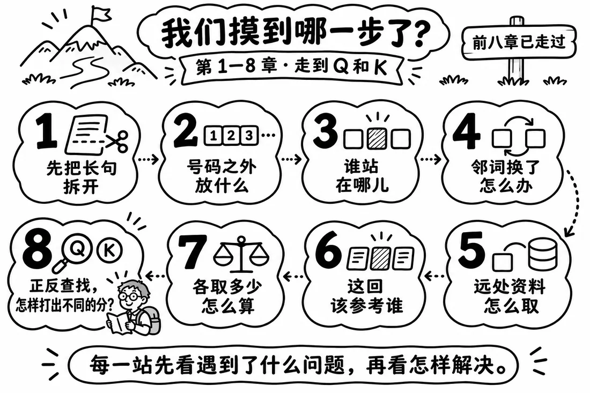
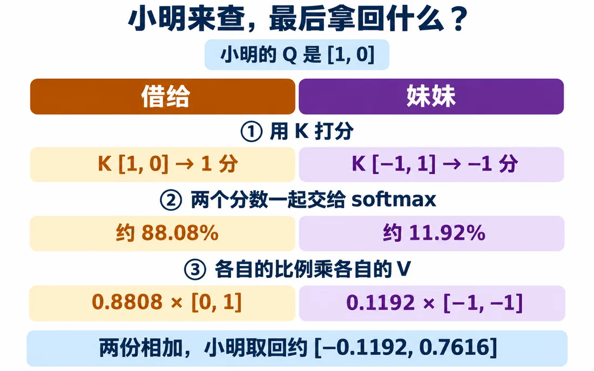
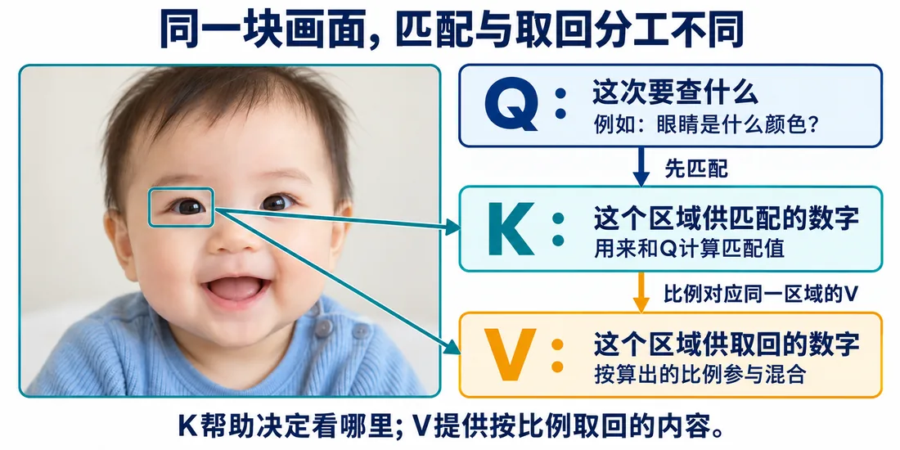
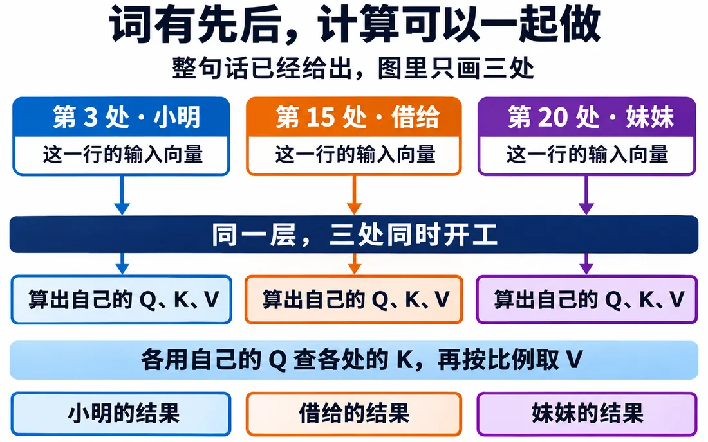

我们在这儿
前面把长句排成数字。上一篇把查找两头分开：谁来查，就用谁的 Q 跟对方的 K 算分，再照第 7 篇的办法换成比例。
可这比例到底该乘在哪组数上？这一篇解决它。

这一篇要解决分开 Q、K、V 的用途，搭出一版自注意力流程。
大概阅读约 10–13 分钟
这一篇补最后一块：分数不直接改输入，要按比例乘到 V 上取回。
拿“小明”这次查询：“借给”得 1 分，“妹妹”得 -1 分。交给 softmax 后，“借给”约 88.1%，“妹妹”约 11.9%。
这 88.1% 该乘哪组数？是“借给”原来的 [0,1]，还是刚才转出来、拿去打分的 [1,0]？
我们本来只想改打分的办法，难道连要取回的资料，也得跟着变？
再想宝宝照片：靠眼睛的形状和位置认出眼睛，找到以后，想看的却是眼睛的颜色。
帮我们找到的线索，和想知道的东西，原来是两回事。
转箭头，是为了让 K 更适合打分；取回的，应该是另一组数。

这组被取回、作为结果值的，叫值向量（Value，记作 V）。
哪一处的 K 帮我们算出比例，就照这个比例，去取同一处的 V。
目前暂时拿各处原来的输入当 V。
这就是“小明”取回的向量。
这一篇输入转 90° 算 K，Q 和 V 都直接用原输入。所以同一位置的 Q 和 V 数值一样，干的活却不同。
借宝宝照片记分工：
点完演示，再用这张宝宝照片把三个角色记牢。

矩阵 X 有 31 行。从每个位置自己那行，分别得到 Q、K、V，按句子顺序排成三张表，各 31 行、每行两格。
跟着“妹妹”查一次：
31 个位置各查一次，就有 31 份结果。
发起查询的 Q 和供查找的 K、V 都来自同一句话，这叫自注意力。“自”说的是，从自己的各处找线索。
取回结果，再逐格加回本轮输入 X。
这里先记住一个代价：每个位置都要和所有位置算一次，所以注意力很灵活，但句子越长，计算和显存压力越大。
各处用自己的输入，就能算出 Q、K、V，不用等别人先算完，可以同时开工、同时查找，这叫并行计算。
能让电脑一起算，大规模训练就更容易。这也是 Transformer 被广泛用来做大语言模型的一个重要原因。
公式里先写完整版本；除以 √d 这一步为什么要做，第 11 篇会细讲。
课堂示例数值：这里的数字用来讲清数据流向，不承接前面每一组手算值。

这一篇收个尾
这一篇拿到：Q、K、V 分工和一版自注意力流程。
下一篇接着看：找一张能同时满足新旧题的 WK。